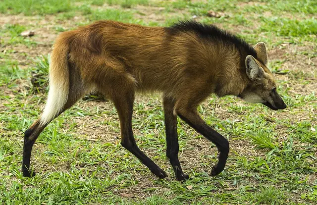
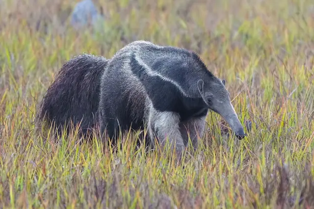
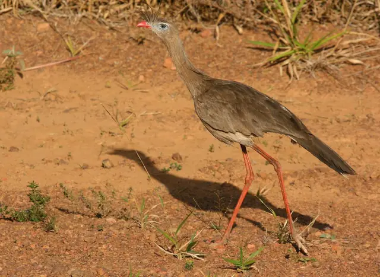
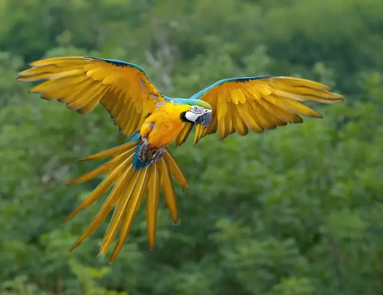
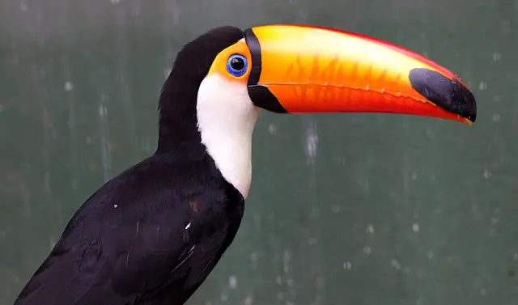

Guia do cerrado
Espécies do Cerrado
42 bichos e 28 plantas, para começar. Procure pelo nome, filtre pelo grupo ou pela paisagem, ou veja só as que estão ameaçadas de extinção.
70 espécies
A situação de ameaça é a da lista nacional (Portaria MMA nº 148/2022)15; confira cada espécie no SALVE, do ICMBio.16

Mamíferos
Lobo-guará
Chrysocyon brachyurus
O maior canídeo da América do Sul. Come muita fruta, principalmente a lobeira, e espalha as sementes.15
Onde: campo sujo, cerrado
Vulnerável
Mamíferos
Tamanduá-bandeira
Myrmecophaga tridactyla
Não tem dentes: come formigas e cupins com uma língua de mais de meio metro.15
Onde: campo limpo, campo sujo, cerrado
VulnerávelMamíferos
Tatu-canastra
Priodontes maximus
O maior tatu do mundo. As tocas enormes que ele cava viram abrigo para dezenas de outros bichos.1516
VulnerávelMamíferos
Onça-pintada
Panthera onca
O maior felino das Américas. No Cerrado, vive sobretudo nas matas ao longo dos rios.15
Onde: mata de galeria, mata ciliar, cerradão
VulnerávelMamíferos
Onça-parda
Puma concolor
Também chamada de suçuarana. Anda muito e ocupa quase todas as paisagens; na lista nacional, as subespécies ameaçadas são vulneráveis.20
Onde: cerrado, cerradão, mata de galeria
VulnerávelMamíferos
Veado-campeiro
Ozotoceros bezoarticus
O veado dos campos abertos. O Parque Nacional das Emas é um dos lugares onde ele ainda é visto em bandos.1516
Onde: campo limpo, campo sujo
VulnerávelMamíferos
Cachorro-vinagre
Speothos venaticus
Um canídeo pequeno e de pernas curtas, que caça em grupo. Raríssimo de ver.1516
Onde: mata de galeria, cerradão
VulnerávelMamíferos
Raposa-do-campo
Lycalopex vetulus
O único canídeo que só existe no Cerrado. Pequena, come muitos cupins e insetos.17
Onde: campo limpo, campo sujo, cerrado
VulnerávelMamíferos
Anta
Tapirus terrestris
O maior mamífero terrestre do Brasil. Nada bem, vive perto da água e espalha sementes de muitas árvores.15
Onde: vereda, mata de galeria, mata ciliar
VulnerávelMamíferos
Tamanduá-mirim
Tamandua tetradactyla
O primo menor do tamanduá-bandeira: sobe em árvores e se segura com a cauda.
Onde: cerradão, mata de galeria, cerrado
Aves
Ema
Rhea americana
A maior ave do Brasil. Não voa, corre muito, e quem choca os ovos é o macho.
Onde: campo limpo, campo sujo

Aves
Seriema
Cariama cristata
O canto alto, que parece uma risada, é um dos sons mais típicos das manhãs do Cerrado.
Onde: campo limpo, campo sujo, cerrado


Aves
Tucano-toco
Ramphastos toco
O maior dos tucanos: o bico oco ajuda a perder calor nos dias quentes.
Onde: cerradão, mata de galeria
Aves
Pato-mergulhão
Mergus octosetaceus
Um dos patos mais raros do mundo: são menos de 250 adultos, todos em rios de água limpa e corredeira do Cerrado.18
Onde: mata de galeria, mata ciliar
Criticamente em perigoAves
Coruja-buraqueira
Athene cunicularia
Mora em tocas no chão e fica de pé na entrada, de dia, vigiando o campo.
Onde: campo limpo, campo sujo
Aves
Carcará
Caracara plancus
Come de tudo e aparece onde tem comida fácil, até atrás de tratores e na beira das queimadas.
Onde: campo limpo, campo sujo, cerrado
Aves
Papagaio-verdadeiro
Amazona aestiva
Anda em casais e bandos barulhentos; é dos bichos mais tirados da natureza para o comércio ilegal.
Répteis
Jiboia
Boa constrictor
Não tem veneno: mata a presa apertando. Ajuda a controlar roedores.
Onde: cerradão, mata de galeria, cerrado
Répteis
Cascavel
Crotalus durissus
Venenosa, avisa antes com o chocalho na ponta da cauda. Prefere fugir a atacar.
Onde: campo sujo, cerrado
Répteis
Teiú
Salvator merianae
O maior lagarto do Cerrado. Passa os meses mais frios e secos enterrado, quase sem se mexer.
Onde: cerrado, mata de galeria
Insetos
Vaga-lume dos cupinzeiros
Pyrearinus termitilluminans
Nas primeiras noites de chuva, as larvas acendem luzes verdes nos cupinzeiros para atrair insetos. As Emas são famosas pelos cupinzeiros que brilham.
Onde: campo limpo, campo sujo
Insetos
Jataí
Tetragonisca angustula
Uma das abelhas sem ferrão mais comuns. Não pica e poliniza muitas plantas. Veja o site Abelhas sem Ferrão.
Onde: cerradão, mata de galeria, cerrado
Árvores
Ipê-amarelo
Handroanthus spp.
Floresce na seca, sem nenhuma folha: as árvores ficam inteiras amarelas por poucos dias.
Arbustos
Lobeira
Solanum lycocarpum
A fruta-do-lobo: o lobo-guará come muito dela e espalha as sementes.
Onde: campo sujo, cerrado
Árvores
Mangaba
Hancornia speciosa
Fruta doce, de leite branco, que só presta bem madura.19
Onde: cerrado, campo sujo
Árvores
Jatobá-do-cerrado
Hymenaea stigonocarpa
Dentro da vagem dura, uma farinha doce que vira bolo e mingau.
Árvores
Barbatimão
Stryphnodendron adstringens
A casca, rica em taninos, é usada há muito tempo na medicina popular para cicatrizar.
Onde: cerrado
Ervas e arbustos
Canela-de-ema
Vellozia spp.
Planta das pedras do campo rupestre. O “tronco” é feito de restos de folhas, que protegem do fogo e da seca.
Onde: campo rupestre
Ervas e arbustos
Sempre-viva
Comanthera elegans
Flores que secam sem perder a forma; colhidas para arranjos e artesanato na Serra do Espinhaço.
Onde: campo rupestre
Ervas e arbustos
Capim-dourado
Syngonanthus nitens
A haste dourada vira o artesanato mais conhecido do Jalapão, no Tocantins.
Onde: campo limpo, vereda
Mamíferos
Capivara
Hydrochoerus hydrochaeris
O maior roedor do mundo. Vive em grupos perto da água e mergulha para fugir.
Onde: vereda, mata ciliar, mata de galeria
Mamíferos
Cachorro-do-mato
Cerdocyon thous
O canídeo mais comum do Cerrado: anda em casal, à noite, e come de tudo, de frutos a insetos.
Onde: cerrado, campo sujo, mata de galeria
Mamíferos
Tatu-peba
Euphractus sexcinctus
Tatu de pelos claros que cava muito rápido e anda de dia nos campos.
Onde: campo sujo, cerrado
Mamíferos
Quati
Nasua nasua
Anda em bandos, com a cauda listrada em pé, revirando folhas atrás de bichinhos e frutos.
Onde: mata de galeria, cerradão
Mamíferos
Macaco-prego
Sapajus libidinosus
Usa pedras como martelo para quebrar cocos duros: um dos poucos animais que fazem isso na natureza.
Onde: cerradão, mata seca, mata de galeria
Mamíferos
Sagui-de-tufos-pretos
Callithrix penicillata
Macaquinho de tufos pretos nas orelhas, comum até nas cidades do Cerrado. Come a goma que escorre das árvores.
Onde: cerradão, mata de galeria, cerrado
Mamíferos
Jaguatirica
Leopardus pardalis
Felino de pelagem pintada, do tamanho de um cachorro médio. Caça à noite.
Onde: mata de galeria, cerradão
Mamíferos
Lontra
Lontra longicaudis
Nadadora de rios de água limpa: onde ela aparece, o rio está bem.
Onde: mata ciliar, mata de galeria
Aves
Papagaio-galego
Alipiopsitta xanthops
Papagaio de cabeça amarela que vive quase só no Cerrado.
Onde: cerrado, campo sujo
Aves
Gralha-do-campo
Cyanocorax cristatellus
Azul, branca e de topete, anda em bandos barulhentos. Uma das aves mais típicas do Cerrado.
Aves
Pica-pau-do-campo
Colaptes campestris
Um pica-pau que procura formigas e cupins no chão, em vez de bicar troncos.
Onde: campo limpo, campo sujo
Aves
Beija-flor-tesoura
Eupetomena macroura
Beija-flor grande, azul e verde, com a cauda aberta em tesoura. Defende as flores dele dos outros.
Aves
Urubu-rei
Sarcoramphus papa
Branco e preto, com a cabeça colorida de laranja e roxo. Plana alto atrás de carcaças.
Onde: cerradão, mata de galeria
Aves
Curicaca
Theristicus caudatus
Bico longo e curvo para tirar insetos do chão; o grito alto, em dupla, se ouve de longe.
Onde: campo limpo, campo sujo
Répteis
Cobra-coral-verdadeira
Micrurus spp.
Venenosa, de anéis vermelhos, pretos e brancos ou amarelos. Há falsas-corais muito parecidas: na dúvida, não mexa em nenhuma.
Onde: cerrado, mata de galeria
Répteis
Jabuti-piranga
Chelonoidis carbonarius
Tartaruga de terra com manchas vermelhas nas patas e na cabeça. Come frutos caídos.
Anfíbios
Sapo-cururu
Rhinella diptycha
Sapo grande, de glândulas com veneno atrás dos olhos. Aparece em massa nas primeiras chuvas.
Onde: vereda, mata de galeria
Peixes
Dourado
Salminus brasiliensis
Peixe dourado e forte, que sobe os rios para desovar. Vive nos grandes rios que nascem no Cerrado.
Onde: mata ciliar
Insetos
Cupim de montículo
Cornitermes cumulans
Constrói os cupinzeiros duros dos campos, que viram casa de corujas, lagartos e vaga-lumes.
Onde: campo limpo, campo sujo
Árvores
Copaíba
Copaifera langsdorffii
O óleo que escorre do tronco é usado há muito tempo na medicina popular.
Onde: cerradão, mata de galeria
Árvores
Sucupira-branca
Pterodon emarginatus
Árvore de flores lilás e sementes aladas, usadas na medicina popular.
Arbustos
Murici
Byrsonima spp.
Frutinhas amarelas de cheiro forte, que viram doce e licor.
Onde: cerrado, campo sujo
Arbustos
Cajuzinho-do-cerrado
Anacardium humile
Um cajueiro anão: quase toda a planta fica embaixo da terra, o que a protege do fogo. Por cima, só os galhos e os cajuzinhos.
Onde: campo sujo, cerrado
Arbustos
Gabiroba
Campomanesia spp.
Parente da goiaba, com frutinhas verde-amareladas doces.
Onde: campo sujo, cerrado
Árvores
Jenipapo
Genipa americana
O fruto verde dá uma tinta preta usada por muitos povos indígenas para pintar o corpo.
Onde: mata ciliar, mata de galeria
Ervas e arbustos
Chuveirinho
Paepalanthus spp.
Sempre-viva de flores brancas que se abrem como a ducha de um chuveiro.
Onde: campo rupestre, campo limpo
Árvores
Pau-santo
Kielmeyera coriacea
Casca de cortiça grossa e flores brancas perfumadas na seca.
Onde: cerrado, campo sujo
Nenhuma espécie com esses filtros.
Quando tem fruta
A época em que cada fruta nativa amadurece, segundo um estudo sobre os frutos do Cerrado.19 Ela muda bastante de região para região e de um ano para o outro: no Distrito Federal e em Goiás, por exemplo, o pequi costuma aparecer bem antes, a partir de outubro.
| Fruta | jan | fev | mar | abr | mai | jun | jul | ago | set | out | nov | dez |
|---|---|---|---|---|---|---|---|---|---|---|---|---|
| Pequi | tem | tem | tem | |||||||||
| Baru | tem | tem | ||||||||||
| Cagaita | tem | tem | ||||||||||
| Mangaba | tem | tem | tem | |||||||||
| Buriti | tem | tem | tem | tem | tem | tem | tem |